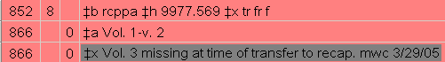
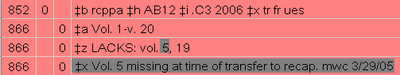

Contact
Princeton University Cataloging Documentation
Contact |
Princeton University Cataloging Documentation |
ReCAP
Before
& after-- physical (doc) New
acquisitions for ReCAP (doc) Selecting: Firestone Stack Procedures (doc) Missing vols. when transferring to ReCAP Transfer
workflow
|
Policy/procedure on how to handle missing volumes from sets and serials when transferring to recap When doing recap transfers staff often comes across cases where a volume was held by the library at one time but is missing at the time of transfer. In order to be able to record the missing volumes and to alleviate confusion when such an item is found follow the procedure below. Before considering an item missing be sure to check on the shelves for the item at least once. If there is no item record : Adjust the 866 holdings statement according to standard procedures and add an 866 field with a non-public note indicating the vol. or no. missing, your initials and date as shown below. Booksets: Change the 866 holdings statement to reflect what’s in hand. Add a new 866 field with the non-public note (in a |x) and record the missing volume. Be sure to use the exact wording in the screenshot below. Example vol. 3 missing when processing for ReCAP  Serial: Do not change the 866 holdings statement. Add a new 866 LACKS: field if not present already. Record the missing volume. Be sure to use the exact wording in the screenshot below. Example vol. 5 missing when processing for ReCAP  If there is an item record : Adjust the 866 holdings statement according to standard procedures and add an 866 field with a non-public note indicating the vol. or no. missing, add your initials and date as shown above. If the item is Not Charged it can be deleted. This includes item records with a Missing or Lost-Library applied status. If the item is Charged out, mark it for catalog review and add “a send to recap” note in the note field (quill pen button). The item will be recapped when it is returned. This includes items with a Lost-System applied (Long Overdue in OPAC) status. |
| ©2008 Princeton University Last Modified 09/19/2006 |